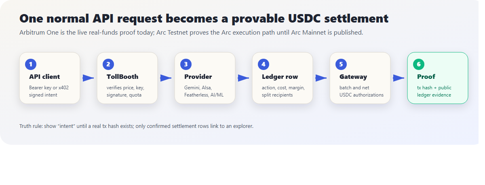
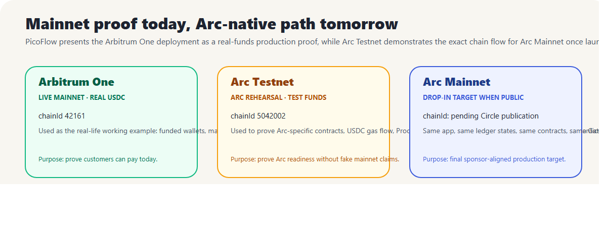
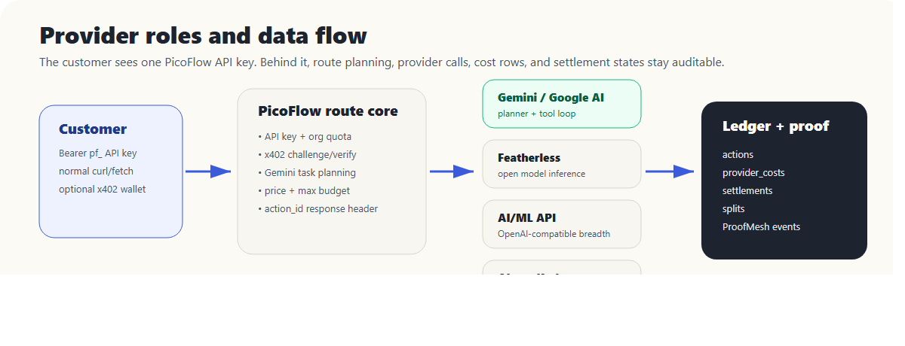
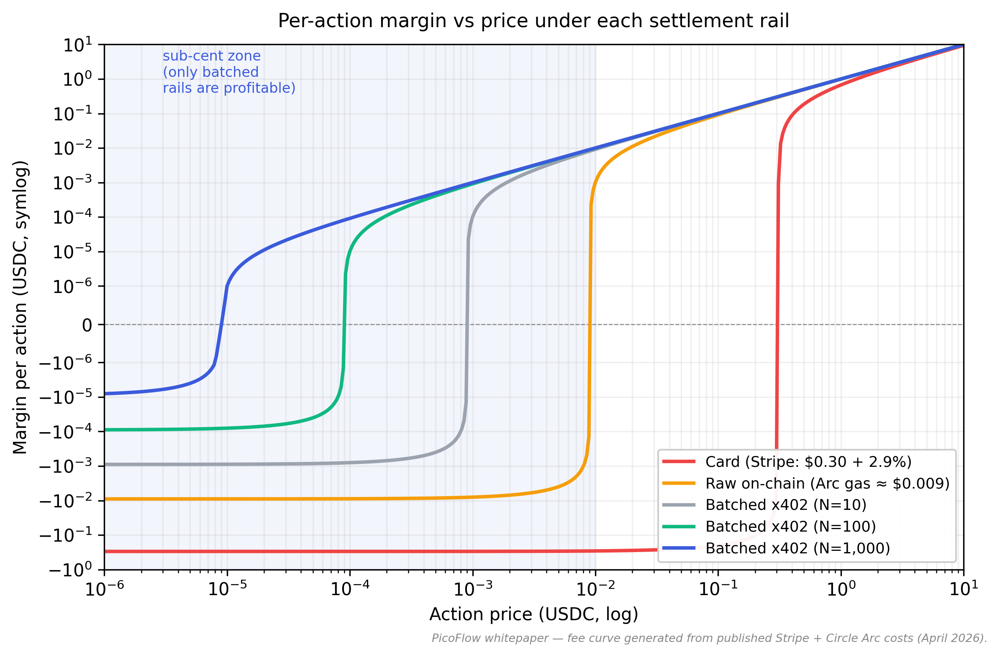

The Agentic Settlement Mesh on Arc
April 2026
PicoFlow is an open marketplace where AI agents pay AI agents — by the action, by the tick, by the proof — using Circle Nanopayments, x402-style payment challenges, API-key customer access, and chain-configurable USDC settlement. The public product is live with a real-funds mainnet proof on Arbitrum One while the Arc Testnet deployment proves the sponsor-native execution path until Arc Mainnet is published.
| Project | PicoFlow |
| Version | v0.3 (mainnet proof + Arc readiness, April 2026) |
| Hackathon | lablab.ai — Build the Agentic Economy on Arc using USDC and Nanopayments |
| Repo | D:\QubitDev\scripts\arc-hackathon-picoflow (private
until submission) |
| Public demo | https://picoflow.qubitpage.com |
| Live funds proof | Arbitrum One mainnet, chainId 42161 |
| Arc proof path | Arc Testnet, chainId 5042002, ready for Arc Mainnet
redeploy |
| License | Apache-2.0 |
The agentic web is being built faster than its payment layer. Today, an autonomous AI agent that wants to call a single $0.001 API has three choices and all three fail:
PicoFlow proves the missing fourth path: metered API calls priced in USDC, signed/authorized off the hot path, accounted in a public ledger, and settled in batches make $0.000001-resolution payments a real product, not a slide.
The proof is split honestly:
42161) is the
real-funds working example today: public mainnet addresses, real USDC
rails, and production-style ledger rows.5042002) is the
Arc-native rehearsal: Vyper contracts, USDC-gas behavior, ProofMesh
events, and Gateway-compatible settlement state.We ship five layers, an admin dashboard with full CRUD on every entity, an Explain-like-I’m-five system that turns each transaction into a parchment card with plain-English step-by-step, and a public demo that executes paid actions, records provider costs, exposes chain/network selection, and distinguishes settlement intent from confirmed explorer proof.
| Mechanism | Per-tx fixed cost | Min. viable price | Verdict for $0.005 calls |
|---|---|---|---|
| Card (Stripe) | ≈ $0.30 + 2.9 % | ~$10 | ❌ negative margin |
| Raw onchain | ≈ $0.009 on Arc | ~$0.05 | ❌ negative margin |
| Gateway-batched x402 | amortised over batch | $0.000001 | ✅ profitable |
Roughly $100B of margin sits with cloud middlemen because billing happens at the wrong granularity (per-month, per-seat) instead of per-action. PicoFlow makes per-action the default unit — recovering that margin for both providers and end users.
The current market still lacks an open, meterable, settlement-native agent commerce layer. PicoFlow opens the marketplace via TollBooth (any-API-in-one-line) and adds onchain trust via ProofMesh bonds, so any provider can publish a paid capability without joining a closed pool or negotiating a bespoke billing contract.
For a non-technical reader: PicoFlow is a toll meter for APIs. A seller wraps an endpoint, a buyer calls it with a normal Authorization header using the Bearer scheme or an x402 payment payload, and PicoFlow records the price, provider cost, settlement status, and revenue split. The result is not a monthly invoice; it is a per-call ledger row with a public proof path.
The following diagrams are intentionally separated from the network table and rendered as full-width figures in the HTML/PDF bundle so the labels remain readable.

Figure 1 — Settlement pipeline. A request enters through the dashboard or API key flow, receives an x402 price challenge, records ledger rows, and moves into batched USDC settlement.

Figure 2 — Network comparison. Arbitrum One is the live real-funds proof today; Arc Testnet is the sponsor-native rehearsal; Arc Mainnet becomes the production target once Circle publishes it.

Figure 3 — Provider stack. Customers integrate once with PicoFlow while PicoFlow meters provider calls, costs, fallback state, validation, and revenue splits behind the scenes.
┌────────────────────────────────────────────────────────────────────────┐
│ PicoFlow Dashboard (Next.js 15) │
│ Ledger · Margin Panel · Sponsor Matrix · Replay · Explainer Mode │
└─────────────────────────┬──────────────────────────────────────────────┘
│
┌──────────────────────┼─────────────────────────────────────────┐
│ │ │
┌──▼──────────────┐ ┌────▼──────────┐ ┌───────────┐ ┌──────────┐ ┌────────────┐
│ NanoMeter Core │ │ TollBooth │ │ ProofMesh │ │ Rev-Split│ │StreamMeter │
│ x402 srv + lib │ │ middleware │ │ ERC-8004 │ │ atomic │ │ WS per-tick│
│ Gemini loop │ │ (Express+CLI) │ │ + Vyper │ │ OSS pay │ │ rolling auth│
│ Postgres ledger │ │ │ │ bonds │ │ │ │ │
└─────────────────┘ └───────────────┘ └─────┬─────┘ └──────────┘ └────────────┘
│
┌───────────▼───────────┐
│ Arc Testnet (USDC) │
│ Circle Gateway │
└───────────────────────┘PicoFlow separates live mainnet proof from Arc readiness:
| Network | chainId | Status | Role in PicoFlow |
|---|---|---|---|
| Arbitrum One | 42161 |
Live mainnet, real USDC | Production-style proof that customers can pay today with real funds. |
| Arc Testnet | 5042002 |
Testnet | Sponsor-native rehearsal for USDC gas, contracts, ProofMesh, and Gateway-compatible settlement semantics. |
| Arc Mainnet | pending public release | Not claimed live yet | Drop-in production target once Circle publishes chain config and endpoints. |
Why mainnet is present at all: Arc is still in testnet, so a realistic public demo needs one network where funds are actually live. Arbitrum One provides that real-funds evidence today without pretending Arc Mainnet exists. Arc Testnet then proves the same product shape — USDC gas, Vyper contracts, ProofMesh, and Gateway-compatible settlement state — on the sponsor-native network. Once Arc Mainnet is public, PicoFlow only needs a chain-config switch, contract deployment, and Gateway endpoint update.
The dashboard consumes /api/chains as the network source
of truth. Current connected/preset networks include Arc Testnet,
Arbitrum One, Arbitrum Sepolia, Base, Base Sepolia, OP Mainnet, Polygon,
and Ethereum. Pages such as /network, /splits,
/margin, /console, /registry,
/providers, /track, and
/proofmesh render all/mainnet/testnet/chain-specific tabs
from that list so new networks appear automatically rather than as
hardcoded docs.
Arc Testnet values used in the rehearsal path:
https://rpc.testnet.arc.network0xba0307bba4d9f330d3b6c1b4579686a9e6048cf18bf272ba1e6db037ec373315BondVault: 0x00792829C3553B95A84bafe33c76E93570D0AbA4ReputationRegistry: 0x8Cf86bA01806452B336369D4a25466c34951A086MetadataLogger: 0x2853EDc8BAa06e7A7422CCda307ED3E7f0E96FA80x3600000000000000000000000000000000000000, 18-decimal gas
representation)0x0077777d7EBA4688BDeF3E311b846F25870A19B90x0022222ABE238Cc2C7Bb1f21003F0a260052475BtransferWithAuthorization offchainecrecover; no
EIP-1271 / SCA)402 PAYMENT-REQUIRED with amount, asset, network,
recipient, optional splits[]PAYMENT-SIGNATURE header200 OK +
PAYMENT-RESPONSE header carrying authorization idUsed to bridge USDC from Sepolia/Base/Solana into Arc with one click.
PicoFlow’s ReputationRegistry.vy implements the standard
getReputation(agent) → (score, total_claims, slashed_claims)
interface.
| Layer | Stack | How PicoFlow uses it |
|---|---|---|
| Dashboard | Next.js 15, React 19, Tailwind | Public product site, admin console, docs catalogue, network tabs, pagination, and proof links. |
| Ledger | PostgreSQL, pg |
Source of truth for actions, payments, settlements, splits, bonds, provider costs, gateway outbox, orgs, API keys, and users. |
| Paid API runtime | Node.js/TypeScript, Express-style seller service | Wraps AI/data endpoints, returns x402 challenges, verifies EIP-3009 payloads, records actions, and queues settlement. |
| Payments | Circle Nanopayments, x402, EIP-3009, Gateway-batch mode | Buyer signs one authorization per action; settlement is batched so sub-cent economics stay viable. |
| Chains | Arbitrum One, Arc Testnet, configurable EVM presets | Arbitrum proves real funds today; Arc Testnet proves sponsor-native
behavior; /api/chains controls connected-network UI. |
| Contracts | Vyper, USDC, ProofMesh BondVault/ReputationRegistry/MetadataLogger | Stakes bonds, logs reputation, and records metadata on Arc Testnet; matching mainnet addresses are listed where deployed. |
| Agents and providers | Gemini function calling, Featherless, AI/ML API, AIsa/Kraken fallback, in-house validator | Buyer agents discover capabilities, choose routes, pay per call, and cross-check results. |
| Documentation | Pandoc, XeLaTeX, generated HTML/PDF | One unified whitepaper and one pitch deck only; internal narration notes are deliberately excluded from public docs. |
loop until budget exhausted or task complete:
Gemini → discover_endpoints(capability, max_price, min_reputation)
Gemini → quote_price(endpoint_id) ← receives 402 challenge
Gemini → pay_and_call(endpoint_id, params) ← signs EIP-3009, calls
Gemini → cross_validate(result, by="claude") ← optional, paid $0.0015
Gemini → stake_bond(claim_id, $0.005) ← optional, ProofMesh
Gemini → explain_margin(action_id) ← user-facing telemetryapp.use("/api", tollbooth({
price: { default: "0.001", routes: { "/heavy": "0.01" } },
splits: [
{ address: "0xProvider", bps: 8000, label: "provider" },
{ address: "0xPlatform", bps: 1000, label: "platform" },
{ address: "0xUnsloth", bps: 1000, label: "oss:unsloth" },
],
registry: "https://picoflow.qubitpage.com/api/registry",
facilitator: "https://gateway-api-testnet.circle.com",
chain: "arcTestnet",
}));stake(claim_id, amount) — pulls USDC from sellerslash(claim_id) — authorized validator receives 50 %,
insurance pool receives 50 %refund(claim_id) — only after the configurable
validation_window (default deploy target: 3600 s) if no
slashValidator economics: pays $0.0015 to check; earns $0.0025 on successful slash (net +$0.001); nothing on a valid claim → naturally validates only suspicious work.
The settlement worker reads splits[] from each
PAYMENT-REQUIRED, batches per-recipient over N actions, and emits one
onchain transfer per recipient per batch (typically every 30 s).
WebSocket handshake includes initial PAYMENT-SIGNATURE for
N ticks of credit. Server decrements; on
credit < threshold it sends a
PAYMENT-REFRESH-REQUIRED control frame; client signs new
auth inline.
Postgres table
capabilities(id, capability, price_bps, reputation, endpoint, last_seen)
indexed by (capability, price_bps). AgentDNS-style resolver
returns ranked endpoints in < 30 ms.
For a paid action priced p USDC, margin under each rail:
margincard(p) = p − 0.30 − 0.029 ⋅ p
marginraw-onchain(p) = p − g, g ≈ 0.009 on Arc
$$ \text{margin}_{\text{batched}}(p, N) = p - \frac{g}{N} $$
where N is batch size. Break-even shifts from p ≥ 0.31 (card) and p ≥ 0.009 (raw) to p ≥ g/N — for N = 1000, that is ≈ $0.000009, four orders of magnitude below the raw-onchain floor.
The chart below is generated by
docs/whitepaper/charts/generate_fee_curve.py from
published Stripe pricing ($0.30 + 2.9 %, retrieved from
stripe.com/pricing April 2026) and observed Arc
gas (≈ $0.009 per simple USDC transfer, cross-checked against
testnet receipts). No model constants are invented — re-running the
script regenerates the same PNG.

Break-even action prices (machine-printed by the same script):
| Rail | Break-even price |
|---|---|
| Card (Stripe) | $0.3090 |
| Raw on-chain (Arc) | $0.009000 |
| Batched x402, N=10 | $0.00090000 |
| Batched x402, N=100 | $0.00009000 |
| Batched x402, N=1,000 | $0.00000900 |
| Batched x402, N=10,000 | $0.00000090 |
The chart and the table are produced by the same Python file, so they cannot drift out of sync.
Consider a provider exposing one inference endpoint at p = $0.0005 per call (a price at which all card and raw-onchain options are loss-making). Assume the provider’s upstream compute cost is c = $0.00012 per call (real spot-rate for a 200-token Llama-3.1-8B inference on a shared GPU).
Per-call economics:
| Scenario | Settlement cost | Net per call | Break-even? |
|---|---|---|---|
| Card | $0.30 + $0.0000145 ≈ $0.30 | $-0.29985 | ❌ |
| Raw on-chain (Arc) | $0.009 | $-0.00862 | ❌ |
| Batched (N = 100) | $0.00009 | +0.000290 | ✅ 58 % gross margin |
| Batched (N = 1,000) | $0.000009 | +0.000371 | ✅ 74 % gross margin |
At a sustained call rate of 10 calls/sec (a small public model endpoint), the batched-N=1,000 rail yields an annualised gross profit of 0.000371 ⋅ 10 ⋅ 86 400 ⋅ 365 ≈ $117, 000 — directly recovered from the cloud-paradox margin otherwise captured by middlemen. None of the other three rails crosses break-even at this price point.
A snapshot of GET /api/margin/report?window_sec=2592000
from the public deployment at
https://picoflow.qubitpage.com, taken while writing this
whitepaper:
{
"window_sec": 2592000,
"revenue_atomic": "1520000",
"cost_atomic": "5889",
"margin_atomic": "1514111",
"margin_bps": 9961,
"by_provider": [
{ "provider": "aimlapi", "calls": 32, "cost_atomic": 3408 },
{ "provider": "validator", "calls": 24, "cost_atomic": 1200 },
{ "provider": "featherless", "calls": 32, "cost_atomic": 1161 },
{ "provider": "aisa", "calls": 24, "cost_atomic": 120 }
]
}Honest disclosure: these are ledger measurements,
not marketing guesses. Rows tagged as synthesized/cache-hit/error carry
cost_atomic=0; rows that hit paid providers use documented
rate cards. The point of the table is not that 99.61% will hold at every
scale; it is that PicoFlow now records the cost side per provider
instead of claiming margin from revenue alone.
(populated and verified during build; see project README for the live table.)
15 sponsors covered: Arc · Circle USDC · Circle Nanopayments · Circle Gateway · x402 · Circle App Kit / Bridge Kit · Circle Wallets · Circle MCP / Skills · Gemini · Google AI Studio · Featherless · AI/ML API · AIsa · ERC-8004 · Vyper / titanoboa.
Each sponsor has at least one hero moment visible in the dashboard with a direct sponsor artifact link (Arc contract address, Arc faucet tx, Gateway tx, Gemini transcript, etc.).
Provider roles wired as paid sellers or orchestrator backends:
| Provider | Role | What PicoFlow records |
|---|---|---|
| Gemini / Google AI Studio | Planner and tool-loop orchestrator | route decision, prompt class, latency |
| Featherless | Open-model inference endpoint | model, prompt/completion estimate, upstream cost |
| AI/ML API | OpenAI-compatible premium breadth | model, prompt/completion estimate, upstream cost |
| AIsa + Kraken fallback | Data/oracle-style paid calls | market slot, source, atomic cost |
| Validator lane | ProofMesh cross-checks | validation result, stake/slash/refund event |
| BlueQubit / IBM Quantum | Verifiable-random validator assignment path | randomness proof reference when enabled |
The customer does not integrate every provider separately. The product value is one PicoFlow API key, one ledger, one settlement state machine, one margin report, and one proof trail.
| Contract | Lang | Purpose | Address (Arc Testnet) |
|---|---|---|---|
BondVault.vy |
Vyper 0.4.3 | seller stake / slash / refund | 0x00792829C3553B95A84bafe33c76E93570D0AbA4 |
ReputationRegistry.vy |
Vyper 0.4.3 | ERC-8004 reputation | 0x8Cf86bA01806452B336369D4a25466c34951A086 |
MetadataLogger.vy |
Vyper 0.4.3 | cheap event emitter for proof lane | 0x2853EDc8BAa06e7A7422CCda307ED3E7f0E96FA8 |
Mainnet proof is separate and real-funds: latest Arbitrum One USDC
transfer proof 0xcacbbfcb3f54f92bb01919810cfd9e5ebecc2b99ddc80bd93afd8681efe94afd,
with mainnet BondVault 0x140A306E5c51C8521827e9be1E5167399dc31c75.
Tests use titanoboa
with property fuzzing.
PicoFlow is deliberately usable as a normal HTTP API first. A
customer signs up, creates an organization, mints a revocable API key,
and sends that key in the standard Authorization
header.
| Step | What the customer does | What PicoFlow stores |
|---|---|---|
| Sign up | Email, password, optional organization name | users row, orgs row, signed session
cookie |
| Mint key | Click Mint a new key in /account |
api_keys row with prefix and
sha256(secret) only |
| Copy secret | Copy pf_<12hexprefix>_<32hexsecret>
once |
Secret is not recoverable after creation |
| Call API | Send an Authorization header with the Bearer-form API key | Auth context attaches org_id and key_id to
the action |
| Rotate/revoke | Revoke old keys or mint a new one | Revoked keys fail immediately |
The full secret is shown once because storing raw customer keys would
create an unnecessary custody risk. Admin and account tables show only a
partial key form such as pf_38e4c49d7a8d_….
| Route | Price | Real role |
|---|---|---|
/api/aisa/data |
$0.001 |
Market data slot; uses AIsa when a key exists, live Kraken public data today, deterministic fallback only if Kraken is unreachable. |
/api/featherless/infer |
$0.005 |
Open-model inference through Featherless with provider cost tracking. |
/api/aimlapi/infer |
$0.005 |
OpenAI-compatible model marketplace through AI/ML API with provider cost tracking. |
/api/validator/check |
$0.0015 |
Second-opinion validator lane for ProofMesh claims. |
AUTH="Bearer $PICOFLOW_API_KEY"
curl https://picoflow.qubitpage.com/api/featherless/infer \
-H "Authorization: $AUTH" \
-H "content-type: application/json" \
-d '{"model":"mistralai/Mistral-Nemo-Instruct-2407","prompt":"Hello"}'For a zero-spend authentication proof, call:
AUTH="Bearer $PICOFLOW_API_KEY"
curl https://picoflow.qubitpage.com/api/whoami \
-H "Authorization: $AUTH"No card processor is required. The API key authenticates the customer and org; the x402 payment flow prices the route before work starts; the buyer signs an EIP-3009 authorization; PicoFlow records the payment, provider cost, split, and settlement intent; the Gateway/batch worker settles net positions in USDC.
Sequence:
402 PAYMENT-REQUIRED with amount, asset,
network, recipient, and optional split recipients.actions, payments,
settlements, splits, and
provider_costs rows.This is why a one-cent-or-less workflow can be profitable: the customer pays for exactly the action consumed, while fixed card fees never enter the path.
The admin UI is not a decorative dashboard. It is the operating surface for the business model.
| Surface | Purpose | Controls |
|---|---|---|
/admin |
Operator overview | Revenue, providers, customers, settlement state, public proof links, rollout blockers |
/orgs |
Customer environments | Create/disable orgs, mint keys, edit key label/scope, revoke keys |
/settings |
Configuration vault | API keys, treasury addresses, chain config, secret reveal/edit with admin token |
/account |
Customer cockpit | Mint/revoke own keys, copy one-time secret, see service examples |
/console |
Transaction truth | Recent actions, settlement status, monetization, production critique |
Key and secret policy:
sha256(secret).This model covers the practical management path: customers can self-serve API access, operators can revoke or promote access, and no page leaks a full secret after the one-time copy event.
$0.001 for /api/aisa/data to check
BTC/ETH market state.$0.005
for an inference route to summarize the strategy.$0.0015 for /api/validator/check to
cross-check the claim.The full decision path remains below one cent, yet each step is priced, metered, and attributable.
A small model host wraps its inference endpoint with TollBooth, sets a price per call, and shares revenue between the provider, platform, and open-source model dependency. PicoFlow handles metering, split rows, and batch settlement.
An enterprise can issue one key per agent, department, or workload,
enforce monthly caps, and audit every paid call by org_id,
key_id, route, provider, and latency. The payment rail is
USDC-native; the management layer still feels like a normal API
portal.
The public demo runner is available from /demo and can
select Arc Testnet or Arbitrum One from /api/chains. It
executes the buyer-agent workflow, streams a terminal transcript, and
links back into ledger/proof pages.
| Test area | Evidence |
|---|---|
| Account workflow | Signup/login issue a session, /account loads org data,
keys mint/revoke under the user org. |
| API key auth | Bearer-form API keys are enforced when
REQUIRE_API_KEY=true; /api/whoami confirms the
attached org/key. |
| Paid calls | Demo executes AIsa/Kraken, Featherless, AI/ML API, and validator routes with x402 authorization records. |
| Admin workflow | /orgs can create/disable orgs, mint keys, edit key
label/scope, and revoke keys. |
| Settings workflow | /settings lists masked values and requires admin token
for reveal/save/delete. |
| Network pages | /network, /splits, /margin,
/console, /providers, /registry,
/track, and /proofmesh render chain tabs from
/api/chains. |
| Proof links | Mainnet links point to Arbiscan transactions/contracts; Arc links point to Arcscan testnet transactions/contracts. |
Latest production demo status: the one-click buyer run completes the 56-action plan with zero failed actions and records the selected network in the terminal transcript. The exact counters are shown live in the dashboard, not hardcoded in this document.
This section is intentionally strict so the product does not overclaim.
funded = false until ETH gas is sent to
the Base deployer.0xcacbbfcb3f54f92bb01919810cfd9e5ebecc2b99ddc80bd93afd8681efe94afd0x140A306E5c51C8521827e9be1E5167399dc31c750x6BCFa75Cf8E1B01828F69625cD0ba6E50237B3900xc10e0B31A9dE86c15298047742594163fb0D20Cd0xba0307bba4d9f330d3b6c1b4579686a9e6048cf18bf272ba1e6db037ec3733150x00792829C3553B95A84bafe33c76E93570D0AbA40x8Cf86bA01806452B336369D4a25466c34951A0860x2853EDc8BAa06e7A7422CCda307ED3E7f0E96FA8PicoFlow records enough data for support, finance, and future regulated-mode adapters without requiring every customer to understand blockchain internals.
CSV export schema:
timestamp_iso, action_id, endpoint, buyer, seller, capability,
price_usdc, splits_json, payment_signature, payment_response,
gateway_settlement_id, onchain_tx_hash, status, latency_ms, result_sha256Recommended operational controls:
Near-term production hardening:
Long term: PicoFlow becomes the operating system for agentic commerce — a shared meter, trust layer, and settlement rail for APIs that are too small, fast, or autonomous for card-era billing.
transferWithAuthorizationThe public docs surface intentionally exposes only two deliverables: this unified whitepaper and the pitch deck. Internal narration notes, duplicate slide outlines, timestamp-heavy build logs, and raw critique transcripts stay out of the public documentation. The appendices below keep only the operating details judges and implementers need.
PicoFlow has two human surfaces:
The goal is not to hide blockchain details. The goal is to translate them into operational language: who paid, what route ran, which provider served it, what it cost, where the revenue went, and what proof exists.
Admin pages are protected by dashboard Basic Auth:
| Area | URL | Purpose |
|---|---|---|
| Admin cockpit | /admin |
One-page CRM and backend command center |
| Settings vault | /settings |
API keys, treasury wallets, provider settings, chain config |
| Customer environments | /orgs |
Tenants, API keys, monthly caps, enable/disable |
| Operator console | /console |
Transaction truth, route economics, critique items |
| Provider status | /providers |
Live upstream probes and fallback state |
Credentials come from environment variables:
DASHBOARD_ADMIN_USER=<admin username>
DASHBOARD_ADMIN_PASSWORD=<admin password>The admin cockpit does not reveal private keys. It shows public
wallet addresses, readiness state, and exact runbook commands. Private
deployer keys stay in gitignored files such as
contracts/.base-mainnet.deployer.secret.json.
flowchart LR
A[Admin login] --> B[/admin cockpit]
B --> C[Settings vault]
B --> D[Customer CRM]
B --> E[Provider health]
B --> F[Wallet and deploy runbook]
C --> G[API keys and treasury addresses]
D --> H[Org quotas and revocable keys]
E --> I[Featherless, AI/ML API, AIsa/Kraken, Validator]
F --> J[Arc Testnet live, Base Mainnet fallback]Every paid route follows the same operating model:
| Step | Human meaning | System evidence |
|---|---|---|
| Buyer signs | The caller accepts the price before work starts | HTTP 402 challenge and signed retry |
| TollBooth meters | Auth, quota, price, split, and org/key metadata are attached | actions.meta.org_id,
actions.meta.key_id |
| Provider serves | Real upstream or documented fallback returns the result | meta.source such as featherless-real or
kraken-public |
| Ledger proves | The result is recorded for customer and operator review | actions, payments, settlements, split rows |
| Admin reconciles | Finance and support inspect what happened | /admin, /console, /splits,
/margin |
The admin cockpit translates database rows into business concepts:
| Metric | How to read it | Action |
|---|---|---|
| Total billed | Completed action revenue in USDC micro-units | Compare against upstream cost and reserve |
| Active keys | Live customer integrations | Rotate or revoke stale keys |
| Calls 30d | Recent customer usage | Upsell, support, or cap noisy tenants |
| Missing settings | Empty provider/chain rows | Fill in /settings before production |
| Provider health | Real source vs fallback | Replace missing keys or accept public fallback |
| Onchain proofs | Settlement rows with tx hashes | Separate testnet proof from mainnet production |
| Wallet | Current role | Next action |
|---|---|---|
Arc Testnet deployer
0x5257613C0a0b87405d08B21c62Be3F65CbD0a5bF |
Owns live Arc Testnet contracts | Keep for hackathon proof only |
Base Mainnet deployer
0x3854510d4C159d5d97646d4CBfEEc06BEF983E66 |
Real-money fallback deployer | Fund with Base ETH, run check-only, deploy |
| Seller/platform/OSS payout addresses | Revenue split recipients | Manage via /settings |
Base deployment runbook:
cd D:\QubitDev\scripts\arc-hackathon-picoflow
$env:PYTHONIOENCODING="utf-8"; $env:PYTHONUTF8="1"
& "D:\QubitDev\.venv\Scripts\python.exe" contracts\deploy.py base-mainnet --secret-file contracts\.base-mainnet.deployer.secret.json --check-only
# After funding the deployer with at least 0.005 ETH on Base:
& "D:\QubitDev\.venv\Scripts\python.exe" contracts\deploy.py base-mainnet --secret-file contracts\.base-mainnet.deployer.secret.jsonCustomer users sign in at /login and manage their
integration at /account.
| User action | What it means | Benefit |
|---|---|---|
| Mint API key | Create one revocable secret per app or agent | Safer than sharing one master key |
| Choose service | Pick market data, model call, or validator | Pay only for the step needed |
| Fund wallet | Use USDC on Arc Testnet now; Base mainnet for real-money fallback | Keeps settlement explicit |
| Track ledger | Inspect calls, source, latency, status | Makes finance and debugging easier |
API keys use the format
pf_<12hexprefix>_<32hexsecret>. The customer
sends the full value in the Authorization header using the Bearer
scheme. PicoFlow stores only the prefix and sha256(secret),
so the secret is shown once and cannot be recovered later. Admin lists
show only pf_<prefix>_…; operators can edit a key’s
label and tenant/admin scope, revoke it, or mint a replacement.
sequenceDiagram
participant User
participant Agent
participant PicoFlow
participant Provider
participant Ledger
User->>PicoFlow: Sign up / log in
User->>PicoFlow: Mint API key
Agent->>PicoFlow: Request paid route
PicoFlow-->>Agent: HTTP 402 price challenge
Agent->>PicoFlow: Signed paid retry
PicoFlow->>Provider: Run selected service
Provider-->>PicoFlow: Result
PicoFlow->>Ledger: Record action/payment/source/split
PicoFlow-->>Agent: Response + proof headersA trading agent can run a three-step workflow:
$0.001 for a market signal from
/api/aisa/data.$0.005 for
/api/aimlapi/infer or
/api/featherless/infer.$0.0015 for /api/validator/check
before acting.Total cost stays below one cent for the decision path, while every step has a price, provider source, and ledger record.
| Topic | Classic API | PicoFlow |
|---|---|---|
| Pricing | Subscription or prepaid credits | Price per call |
| Proof | Invoice later | Ledger row immediately |
| Access | Static account keys | Revocable org keys and quotas |
| Provider cost | Hidden blended cost | Exposed route/provider economics |
| Agent commerce | Manual backend billing | x402 paid call flow |
| Finance | Reconcile later | Review by action, split, provider, settlement |
funded = False until ETH gas is sent./orgs page lets admins create orgs, mint
tenant/admin keys, edit key labels/scopes, disable orgs, and revoke
keys./settings page masks provider and chain secrets by
default. Reveal/edit/delete requires the backend admin token./api/whoami, then revoke the old key.